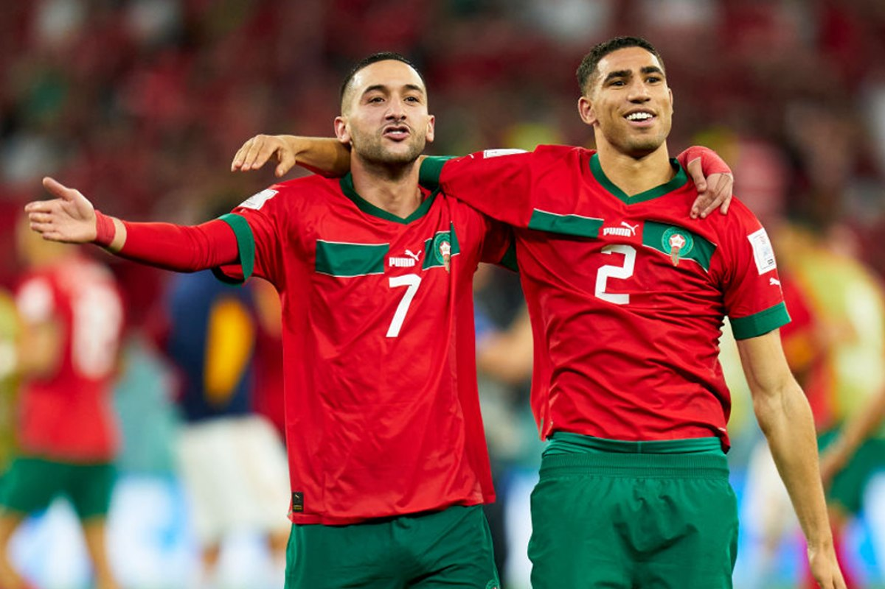
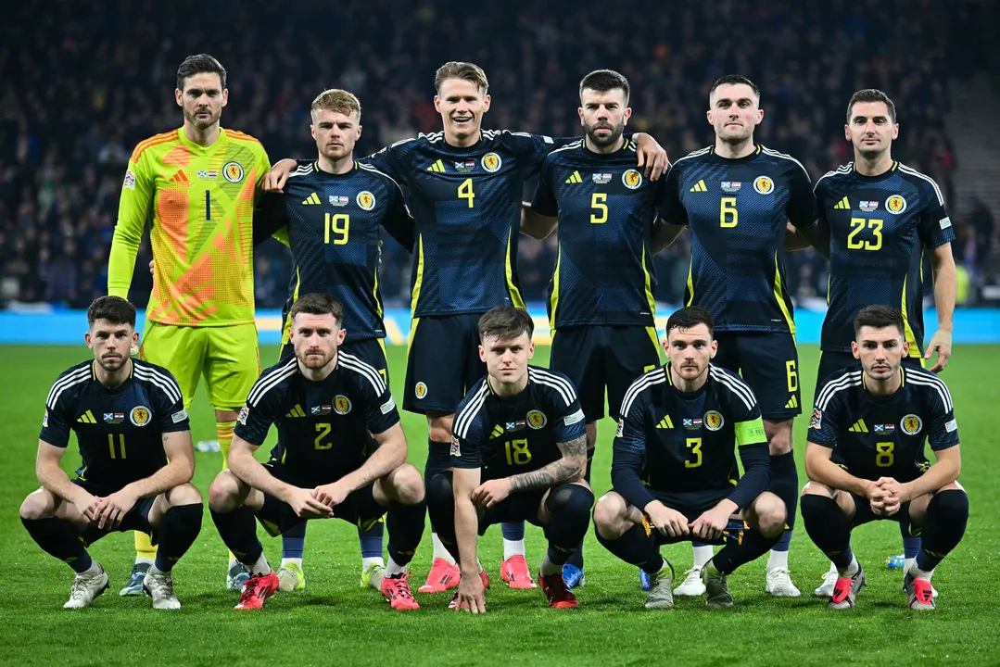
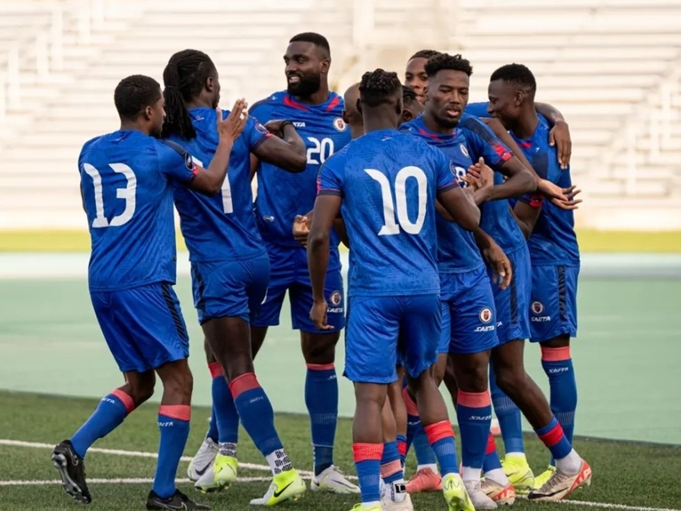

Grupo C fechado: Brasil terá Marrocos, Escócia e Haiti na primeira fase da Copa de 2026
O sorteio realizado em dezembro de 2025 definiu os grupos da Copa do Mundo de 2026, e o Brasil caiu no Grupo C. Os adversários serão Marrocos, Escócia e Haiti – três seleções com históricos bem diferentes, mas que prometem dar trabalho .A estreia será contra Marrocos no dia 13 de junho, em Nova York. Depois, no dia 19, o Brasil enfrenta o Haiti na Filadélfia. A primeira fase fecha no dia 24, contra a Escócia, em Miami
Escrito por luiz guilherme em 15-05-2026 ás 14:35
Marrocos: o perigo da primeira rodada
Se tem um adversário nesse grupo que merece respeito imediato, é Marrocos. Quem acompanhou a Copa de 2022 sabe bem: os Leões do Atlas fizeram história ao se tornarem a primeira seleção africana a chegar numa semifinal de Copa do Mundo
O time tem estilo bem definido. É aquela escola africana moderna:organização tática impressionante, jogadores velozes no contra-ataque e uma defesa que não dá espaços. Muitos dos atletas atuam em grandes ligas europeias – Premier League, Ligue 1, La Liga – e trazem na bagagem a experiência de jogos de alto nível
Curiosamente, Brasil e Marrocos já se encontraram em Copas. Foi em 1998, na França, com vitória brasileira por 3 a 0 – gols de Ronaldo, Rivaldo e Bebeto. Mas o Marrocos de hoje é outro. Prova disso é que, num amistoso de preparação em março de 2026, a equipe venceu o Paraguai por 2 a 1, mostrando que vem afiada para o Mundial
Fique de olho em:Khannouss e Aynaoui, autores dos gols contra o Paraguai, e na solidez defensiva que foi a marca registrada da campanha histórica de 2022.

Destaques da seleção marroquenha incluem hakimi do PSG e ziyechi ex-atacante do ajax e chelsea
Escócia: o velho conhecido em busca da redenção
Escócia é praticamente um "cliente antigo" do Brasil em Copas. E o retrospecto é inteiramente azul e amarelo: são quatro encontros em Mundiais, com três vitórias brasileiras e um empate
Mas a história recente da Escócia pede atenção. A seleção ficou 28 anos sem pisar numa Copa – a última participação havia sido em 1998, curiosamente no mesmo grupo do Brasil e de Marrocos . Agora, os comandados do técnico vêm embalados: conseguiram se classificar para as últimas duas Eurocopas e, finalmente, para o Mundial de 2026.
O estilo de jogo escocês é aquele futebol britânico raiz: muita intensidade física, bola aérea perigosa, jogadas de linha de fundo. Não espere firulas. Eles vão buscar o jogo no corpo a corpo e nas bolas paradas. A torcida, a famosa "Tartan Army", promete lotar os estádios e criar uma atmosfera pesada.
O ponto de interrogação? A Escócia perdeu o último amistoso pré-Copa para a Costa do Marfim por 1 a 0 . Ajustes ainda estão sendo feitos, mas num grupo onde Brasil e Marrocos brigam pelo topo, os escoceses podem facilmente complicar a vida de quem vacilar.

Destaques da seleção escocesa incluem mctominay do napoli e robertson do liverpool
Haiti: a zebra com história para contar
Fechando o grupo, o Haiti é a grande surpresa. E que história eles têm para contar. A última – e única – participação haitiana em Copas foi há 52 anos, em 1974, quando se tornaram o primeiro país caribenho a disputar um Mundial Sim, você leu certo: 52 anos. Depois de mais de meio século, os "Grenadiers" estão de volta ao maior palco do futebol.
E não foi por acaso. O Haiti garantiu vaga ao vencer o Grupo C das eliminatórias da Concacaf, deixando para trás seleções tradicionais como Costa Rica e Honduras . É um time que costuma jogar no contra-ataque, explorando a velocidade dos pontas, e que não tem nada a perder – o que, convenhamos, os torna perigosos.
Um fato curioso: no último amistoso antes da Copa, o Haiti arrancou um empate heróico de 1 a 1 contra a Islândia, com gol de Isidor nos acréscimos do segundo tempo . Mostrou raça e capacidade de reagir.
Para o Brasil, o duelo do dia 19 de junho, na Filadélfia é aquele jogo "armadilha". Teoricamente mais acessível, mas contra uma seleção que vai entrar em campo com a motivação lá em cima.

Seleção haitina que pode ser a surpresa dessa fase de grupos
O que esperar do Grupo C?
No papel, Brasil e Marrocos são os favoritos para avançar às 32 avos de final – sim, 32! É a primeira Copa com 48 seleções, e os dois melhores de cada grupo seguem na competição
Mas a Escócia tem histórico de complicar a vida do Brasil em Copas (mesmo sem vencer), e o Haiti chega como a zebra que todo mundo gosta de torcer contra.
O retrospecto geral do Brasil contra esses adversários é impecável: cinco jogos, quatro vitórias, um empate e nenhuma derrota . Mas como todo brasileiro sabe, em Copa do Mundo, retrospecto não entra em campo.
A estreia contra Marrocos no dia 13 de junho já será um termômetro e tanto. Se passar bem por ali, a caminhada fica mais tranquila. Se tropeçar... bem, aí o grupo pega fogo.
📅 Datas dos jogos do Brasil (horários de Brasília):